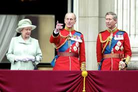
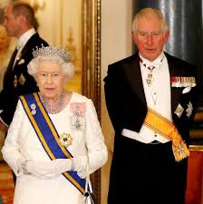
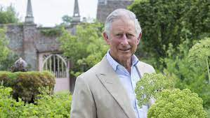

By Lucia Adams

In 1934 Virginia Woolf wrote of royalty, “For centuries a certain family has been segregated; bred with a care only lavished upon race-horses; splendidly housed, clothed, and fed; abnormally stimulated in some ways, suppressed in others; worshipped, stared at, and kept shut up, as lions and tigers are kept, in a beautiful brightly lit room behind bars.” A fan of preserving the mystery and magic of an ancient institution she questioned whether one would bow and curtsey to “people just like ourselves?” How prescient! David Attenborough echoed this in his remark that monarchy, the titular head of a royal family, depends on the mystique of “the tribal chief in the hut”.
Brits call those who revere royalty and its loyal retainers, the aristocracy, “posh crushers” though it is also a love of pageantry, the ultimate theater of life, a paradisaical fantasy that illuminates, however briefly, the hum drum pettifoggery of ordinary life. Woolf felt it a consolation that kings (and dukes) exist! Today those who agree would no doubt attribute it to Queen Elizabeth II with her mastery of the art of closed mouth unknowability. A living symbol of the continuity of English history and a thousand-year-old monarchy she is in fact the 30th great grand-niece of the first King of England, Aethelstan, ruling from 895-939 AD.
Devoid of any real power as a constitutional monarch in a parliamentary democracy the Queen is an important focus for national identity, unity and pride providing a sense of stability. The fact that the Windsors like many of the remaining royals in Europe are seen by lusterless cynics as “fancy-dress fodder for magazines” belies their enormous psychic and emotional power. This posh crusher’s love of a potent anachronism is no doubt irrational with no practical value…but there it joyfully is.
Britain’s greatest treasure, the suave business empire that Prince Philip deemed The Firm with its committed global ambassadors, pumps over two billion pounds into the UK economy annually much via tourism. (That bone chilling photograph of a teenage Meghan Markle in front of Buckingham Palace! Shudder!) The royal family attends thousands of moral boosting charitable engagements every year; in the 365 days of 2019 Prince Charles, patron of 3,000 charities, attended 521 public events. and the rest of the family well over 2,000.

In the radicalized 1960s and 70s I taught General Studies to British Leyland workers in Preston, Lancashire and once declared the monarchy to be an insult to every working man. The lads were having none of it: “Go back to America if you don’t like it here, Miss.” By the time I returned home after the Silver Jubilee I was an aficionado of the royal family, especially Prince Charles, close to me in age and progressive opinions so different from the pragmatic conservatism of his father. I unequivocally took his side in the Diana Wars and most recently in the highly mendacious Montecito Assault where two poltroons tried their best to discredit the royal family.
Now that Prince Charles is to step up to a more prominent role as his aged, still charismatic mother retreats to Windsor Castle the broad majority in the country has faith in his intelligence and ability to do the right thing. Here is an article I wrote in 2003 which has relevance today.
xxx
Charles the Undaunted
“All I do as Prince of Wales is make the most of it as I see it.”
Prince Charles certainly does make the most of it, and rather well one might add! When the New York Times reported last fall that the “Prince’s Technology Qualms Create a Stir in Britain”, we knew what predictable media bites were in store: veiled sarcasm, not- so- veiled mockery, the politically correct attitude about the infallibility of “progress”. The Prince, concerned about nanotechnology and its godlike manipulation of subatomic molecules, asked the Royal Society’s prestigious scientific community if research were being sufficiently regulated. After all, artificially created nanoparticles had appeared intermixed with living cells in the organs of research animals and then there was that mercenary behaviour of those who profited (including recent convicted felons) from biotech companies.
The broad humanist education that Prince Charles received at Cambridge, always noted for its scientific prowess, has always been a wedge between him and ordinary folk as it was, sadly, between him and Princess Diana whose interests are forever frozen in a famous photo, of a tearful yet beautiful woman, cameras ablazing, patting the hand of Elton John, in the front row, at Gianni Versace’s funeral. She was a victim of her generation as much as a victim the English O Level system which narrows the choices in life at 11 years old, though Prince Charles defied the odds and beat the system. He was the first heir to the throne to complete a university education, then put it to some use. His study of history, anthropology and archeology at Cambridge and beyond has solidly and smartly informed his opinions about architecture and the environment.

The fact that he chooses to live the life of an enlightened 18th century country gentleman is not merely an anthropological curiosity but actually has some urgent importance. By espousing organic farming, and questioning the safety of genetically engineered crops, or those ‘advanced’ farming methods which undisputedly created hoof and mouth, then mad cow disease, by cross-species breeding, he has exhibited real courage. One only wishes he had questioned the role of hormones in human beings, especially women, early on since it might have saved countless lives. We encourage his questioning, his daring, his opinions contrary from the paralyzing soma we are fed on TV and in newspapers. His social, one is tempted to say socialistic, ideas derive from the optimistic romanticism, with a touch of positivism, of the late 19th century, from William Morris, John Ruskin and Edward Carpenter, a time when it was believed that the human condition could be improved by the environment. To question the environment in which we dwell is a still a staple in scientific studies in 2003 as in the writings of Stephen Gould, who was firmly in the camp of nurture over nature, a progressive point of view Prince Charles obviously shares.

In 1984 on the 150th anniversary of the Royal Academy of Architecture at a lecture in Hampton Court Palace, Prince Charles referred to the proposed National Gallery extension on the South Bank of the Thames as “a monstrous carbuncle on the face of a much-loved and elegant friend.”, a metaphor that has done its duty as a synonym for Carolingian reaction. It is actually not only a very funny but very accurate description of the ghastly creations of “New Brutalist” architects; equally funny and accurate is his description of the British Museum’s new Reading Room as “an assembly hall of an academy for secret police.” Or in the 1989 A Vision for Britain his apt assessment of the “brash megalomania which sometimes masquerades as creative design.” Bravo!
What a wonderful way with words and let’s face it—England, and France as well, got much of modern architecture wrong, France with the Pei in the Louvre and cartoonish Leger-like Pompidou Centre or Britain with that appalling Hayward Gallery an ugly misinterpretation in raw concrete of Le Corbusier and Mies van der Rohe, sitting in the drizzling rain as looming and portentous as a Nazi era monument in Düsseldorf. Because Prince Charles deplores such assaults on the senses he is not backward-looking, mired in tradition as those journalistic minds keep carping on about, but a proponent of a more holistic and humane approach to the environment, informed by historical knowledge. In the Duchy of Cornwall he and architect Leon Krier designed the model village of Poundbury as a planned urban extension on the western edge of Dorchester; this charming town embodies the principles of the “return of human values to architecture” employing traditional materials, negotiable scale and local vernacular styles as harmonious blending with the landscape. Consequently people are clamoring to live there and this year has been shown to make a handsome profit from farming.
Poundbury in Dorset.
Prince Charles is and always has been a Humanist, an archaic term but still one fraught with multiple meanings according to Fredrick Edwards the Director of the American Humanist Association, who classifies eight types, and the Prince most fitting the mode of Renaissance Humanist in his “confidence in the ability of human beings to determine for themselves what is true or false.” What they have in common is a cadre of “people who think for themselves”, and who are unafraid of the pursuit of knowledge and of unpopular opinions. Certainly Prince Charles’ ideas reflect a very privileged way of apprehending the universe, and certainly it is far easier to speculate on the possibility of human happiness if you are unconscionably privileged but he is nonetheless very much in tune with the science of the natural universe and the hopes for the welfare of the population.
Prince Charles dares to have inspiringly large ideas in an age when ideology is fraught; they are situated firmly in the mainstream of humanistic thought combining love of art and design with a appreciation of science much like Julian Huxley, Buckminster Fuller, Leakey, Gould and Laurens van der Post, a renaissance man who is the godfather of Prince William. What sets Charles apart from aesthetic snobs like Lord Kenneth Clark, of Civilization, is the fact he is not in love with paintings, or sculpture or literature but with the science of improving the quality of life through environmental research.
I met Prince Charles in the midwest, once on the polo fields of Oak Brook, Illinois, where he visited the Butler clan which shared his interest in wildlife and horses, then again at Marshall Field’s department store in Chicago’s Loop, under the elevated trains; he was promoting Wedgwood crystal with Piers Wedgwood who had just married the store’s PR person. Charles looked so natty, with three fingertips perfectly poised on top of the left pocket of his blue blazer instead of stuffed into his pockets. Just the right amount of cuff and collar showing, shoes polished. He was very earnest, approachable, ‘regular’, a bracing wind not only across the ocean but across the oceans of time…that such a person actually existed was actually a curious relief. I have always felt that Prince Charles had he not been burdened with his position might have been an Oxbridge Don, perhaps a professor of the history of the Early Modern Period or a professor of Architecture. He might have had, in that capacity, been taken more seriously and had more influence than we rob him of today.
The accident of birth was indeed made the very most of this fellow. He does not have to have the unique public voice he has; he does not have to endure the plebian mockery of his improbable position, but he does. Some have understood his intelligent commitment, others did not such as Princess Diana as she lamented “Duty! Duty! — all you think about is duty!”, one of the many tragi-comic vignettes related in her private secretary’s memoirs.
xxx
After the death of his “dear papa” who he praised for remarkable devoted service for 70 years, Prince Charles as head of the family is trying to reshape the Firm, to streamline and downsize it to continue its role as an effective and inspiring welfare monarchy that will persevere and endure.